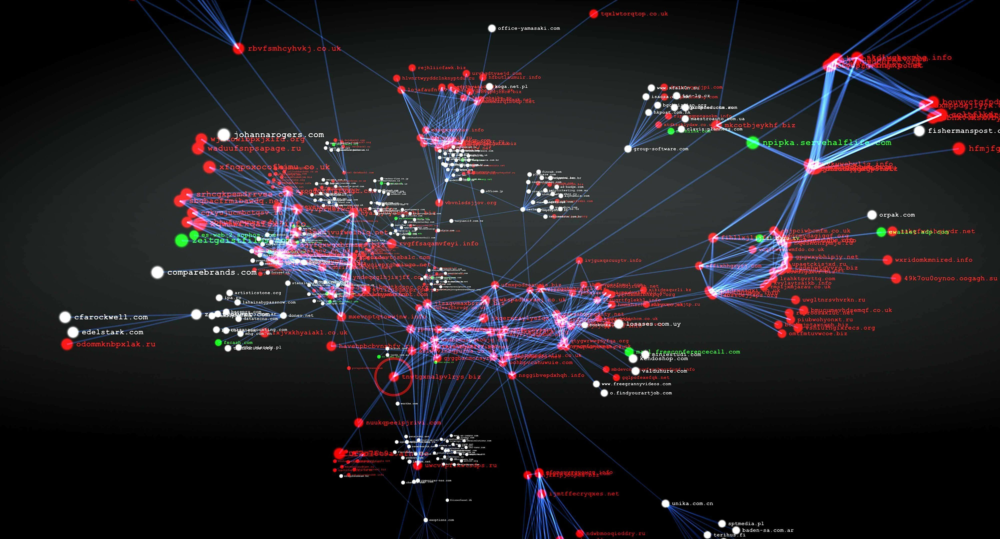

HackMethods
Github Dorks & Leaks

Api keys leaks in github
https://github.com/hisxo/gitGraber
https://github.com/eth0izzle/shhgit
https://github.com/techgaun/github-dorks
https://github.com/michenriksen/gitrob
https://github.com/anshumanbh/git-all-secrets
https://github.com/awslabs/git-secrets
https://github.com/kootenpv/gittyleaks
https://github.com/dxa4481/truffleHog
https://github.com/obheda12/GitDorker
Dorks
bash
".mlab.com password"
"access_key"
"access_token"
"amazonaws"
"api.googlemaps AIza"
"api_key"
"api_secret"
"apidocs"
"apikey"
"apiSecret"
"app_key"
"app_secret"
"appkey"
"appkeysecret"
"application_key"
"appsecret"
"appspot"
"auth"
"auth_token"
"authorizationToken"
"aws_access"
"aws_access_key_id"
"aws_key"
"aws_secret"
"aws_token"
"AWSSecretKey"
"bashrc password"
"bucket_password"
"client_secret"
"cloudfront"
"codecov_token"
"config"
"conn.login"
"connectionstring"
"consumer_key"
"credentials"
"database_password"
"db_password"
"db_username"
"dbpasswd"
"dbpassword"
"dbuser"
"dot-files"
"dotfiles"
"encryption_key"
"fabricApiSecret"
"fb_secret"
"firebase"
"ftp"
"gh_token"
"github_key"
"github_token"
"gitlab"
"gmail_password"
"gmail_username"
"herokuapp"
"internal"
"irc_pass"
"JEKYLL_GITHUB_TOKEN"
"key"
"keyPassword"
"ldap_password"
"ldap_username"
"login"
"mailchimp"
"mailgun"
"master_key"
"mydotfiles"
"mysql"
"node_env"
"npmrc _auth"
"oauth_token"
"pass"
"passwd"
"password"
"passwords"
"pem private"
"preprod"
"private_key"
"prod"
"pwd"
"pwds"
"rds.amazonaws.com password"
"redis_password"
"root_password"
"secret"
"secret.password"
"secret_access_key"
"secret_key"
"secret_token"
"secrets"
"secure"
"security_credentials"
"send.keys"
"send_keys"
"sendkeys"
"SF_USERNAME salesforce"
"sf_username"
"site.com" FIREBASE_API_JSON=
"site.com" vim_settings.xml
"slack_api"
"slack_token"
"sql_password"
"ssh"
"ssh2_auth_password"
"sshpass"
"staging"
"stg"
"storePassword"
"stripe"
"swagger"
"testuser"
"token"
"x-api-key"
"xoxb "
"xoxp"
[WFClient] Password= extension:ica
access_key
bucket_password
dbpassword
dbuser
extension:avastlic "support.avast.com"
extension:bat
extension:cfg
extension:env
extension:exs
extension:ini
extension:json api.forecast.io
extension:json googleusercontent client_secret
extension:json mongolab.com
extension:pem
extension:pem private
extension:ppk
extension:ppk private
extension:properties
extension:sh
extension:sls
extension:sql
extension:sql mysql dump
extension:sql mysql dump password
extension:yaml mongolab.com
extension:zsh
filename:.bash_history
filename:.bash_history DOMAIN-NAME
filename:.bash_profile aws
filename:.bashrc mailchimp
filename:.bashrc password
filename:.cshrc
filename:.dockercfg auth
filename:.env DB_USERNAME NOT homestead
filename:.env MAIL_HOST=smtp.gmail.com
filename:.esmtprc password
filename:.ftpconfig
filename:.git-credentials
filename:.history
filename:.htpasswd
filename:.netrc password
filename:.npmrc _auth
filename:.pgpass
filename:.remote-sync.json
filename:.s3cfg
filename:.sh_history
filename:.tugboat NOT _tugboat
filename:_netrc password
filename:apikey
filename:bash
filename:bash_history
filename:bash_profile
filename:bashrc
filename:beanstalkd.yml
filename:CCCam.cfg
filename:composer.json
filename:config
filename:config irc_pass
filename:config.json auths
filename:config.php dbpasswd
filename:configuration.php JConfig password
filename:connections
filename:connections.xml
filename:constants
filename:credentials
filename:credentials aws_access_key_id
filename:cshrc
filename:database
filename:dbeaver-data-sources.xml
filename:deployment-config.json
filename:dhcpd.conf
filename:dockercfg
filename:environment
filename:express.conf
filename:express.conf path:.openshift
filename:filezilla.xml
filename:filezilla.xml Pass
filename:git-credentials
filename:gitconfig
filename:global
filename:history
filename:htpasswd
filename:hub oauth_token
filename:id_dsa
filename:id_rsa
filename:id_rsa or filename:id_dsa
filename:idea14.key
filename:known_hosts
filename:logins.json
filename:makefile
filename:master.key path:config
filename:netrc
filename:npmrc
filename:pass
filename:passwd path:etc
filename:pgpass
filename:prod.exs
filename:prod.exs NOT prod.secret.exs
filename:prod.secret.exs
filename:proftpdpasswd
filename:recentservers.xml
filename:recentservers.xml Pass
filename:robomongo.json
filename:s3cfg
filename:secrets.yml password
filename:server.cfg
filename:server.cfg rcon password
filename:settings
filename:settings.py SECRET_KEY
filename:sftp-config.json
filename:sftp-config.json password
filename:sftp.json path:.vscode
filename:shadow
filename:shadow path:etc
filename:spec
filename:sshd_config
filename:token
filename:tugboat
filename:ventrilo_srv.ini
filename:WebServers.xml
filename:wp-config
filename:wp-config.php
filename:zhrc
HEROKU_API_KEY language:json
HEROKU_API_KEY language:shell
HOMEBREW_GITHUB_API_TOKEN language:shell
jsforce extension:js conn.login
language:yaml -filename:travis
msg nickserv identify filename:config
org:Target "AWS_ACCESS_KEY_ID"
org:Target "list_aws_accounts"
org:Target "aws_access_key"
org:Target "aws_secret_key"
org:Target "bucket_name"
org:Target "S3_ACCESS_KEY_ID"
org:Target "S3_BUCKET"
org:Target "S3_ENDPOINT"
org:Target "S3_SECRET_ACCESS_KEY"
password
path:sites databases password
private -language:java
PT_TOKEN language:bash
redis_password
root_password
secret_access_key
SECRET_KEY_BASE=
shodan_api_key language:python
WORDPRESS_DB_PASSWORD=
xoxp OR xoxb OR xoxa
s3.yml
.exs
beanstalkd.yml
deploy.rake
.sls
AWS_SECRET_ACCESS_KEY
API KEY
API SECRET
API TOKEN
ROOT PASSWORD
ADMIN PASSWORD
GCP SECRET
AWS SECRET
"private" extension:pgp
Keyword
my Keyword that i like to use ➤➤
Jenkins
OTP
oauth
authoriztion
password
pwd
ftp
dotfiles
JDBC
key-keys
send_key-keys
send,key-keys
token
user
login-singin
passkey-passkeys
pass
secret
SecretAccessKey
app_AWS_SECRET_ACCESS_KEY AWS_SECRET_ACCESS_KEY
credentials
config
security_credentials
connectionstring
ssh2_auth_password
DB_PASSWORD
— — — — — — — — — — — — — — — — — — -BASH — — — — — — — — — —
language:bash password
language:bash pwd
language:bash ftp
language:bash dotfiles
language:bash JDBC
language:bash key-keys
language:bash send_key-keys
language:bash send,key-keys
language:bash token
language:bash user
language:bash login-singin
language:bash passkey-passkeys
language:bash pass
language:bash secret
language:bash credentials
language:bash config
language:bash security_credentials
language:bash connectionstring
language:bash ssh2_auth_password
— — — — — — — — — — — — — — — — — — -PYTHON — — — — — — — — —
language:python password
language:python pwd
language:python ftp
language:python dotfiles
language:python JDBC
language:python key-keys
language:python send_key-keys
language:python send,key-keys
language:python token
language:python user
language:python login-singin
language:python passkey-passkeys
language:python pass
language:python secret
language:python credentials
language:python config
language:python security_credentials
language:python connectionstring
language:python ssh2_auth_password
the most lovely for me
password — passwd — pwd — secret — private — Ldap
why ???
because if i use keyword like secret
i can got all of these result
secret_key
secretkey
secret api
secret token
secret pass
secret password
aws secret
client secret